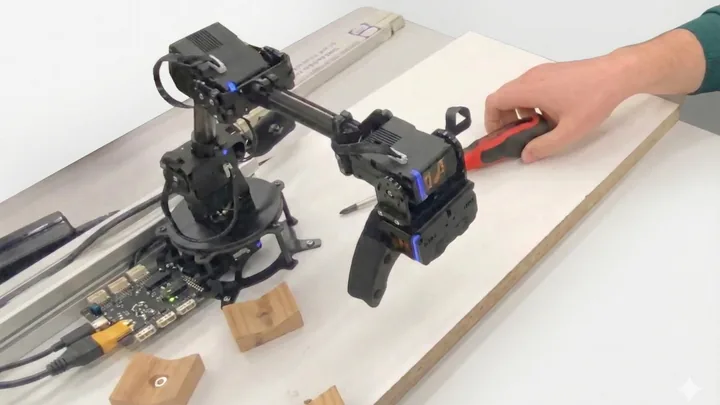
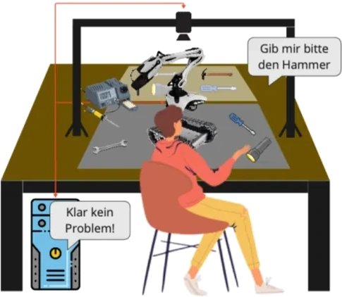
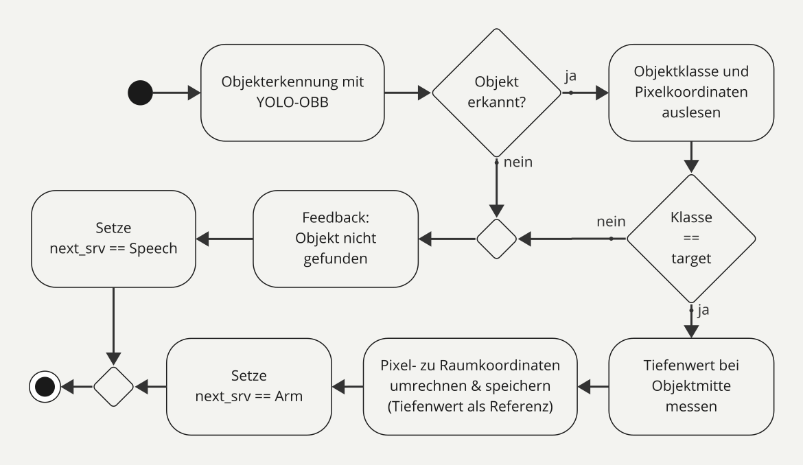

← Selected work
Course project · 10/2024 – 02/2025
Service and Industry Robotics · TH Köln
Voice-Controlled Cobot System
Working side by side: a robot arm assists its user by fetching and stowing tools on voice command in a shared workspace.
- Developed a ROS 2 service-based architecture with a central manager orchestrating dialogue, object detection, and robotic arm control for collaborative tool fetching and stowing.
- Linked STT, LLM intent recognition, and TTS for hands-free interaction in a shared workspace.
- Derived closed-form IK for a 4-DOF arm, resolving MoveIt failures caused by orientation constraints.
- Iteratively trained a YOLO11-OBB model for oriented tool detection, raising mAP50-95 to ~81%.


System architecture
ROS 2 service architecture from the project report: a manager client coordinates the Speech, Vision, and Arm services. Activity diagrams and labels are in German.


